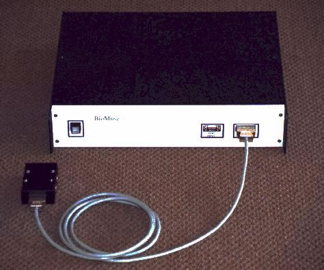
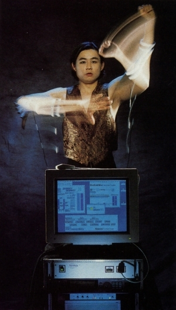

BioMuse
The first commercial biosignal controller: muscle tension, eye movement, and brainwaves become music

Overview
The BioMuse is an 8-channel programmable biosignal controller developed at Stanford University's CCRMA (Center for Computer Research in Music and Acoustics) and commercialized by BioControl Systems, Inc. beginning in 1990. The system acquires electromyogram (EMG), electrooculogram (EOG), and electroencephalogram (EEG) signals through surface electrodes, amplifies and digitizes them at 4 kHz per channel with 12-bit resolution, processes them on a Texas Instruments TMS320C25 digital signal processor, and outputs user-definable MIDI note events and continuous controller data. The production version (BioMuse v.3, 1992) was a single 17-inch rack-mount enclosure that connected via optically isolated serial link to a DOS PC. Each unit cost $20,000; over 100 were sold to research institutions including NASA, the U.S. Air Force, British Telecom, and Honeywell.
Musician Atau Tanaka composed the first concert piece for the BioMuse (Kagami, 1991) and performed internationally with it for over two decades. The instrument was also deployed for accessibility: at Loma Linda Medical Center in 1991, a pre-release BioMuse enabled a disabled child to play video games using EOG control. The system appeared on CNN multiple times and was featured on the cover of Scientific American in October 1996. The BioMuse is recognized by the NIME (New Interfaces for Musical Expression) community as foundational 'prehistoric NIME' work.
Deep dive
Development began in 1987 at Stanford University's CCRMA, a unique interdisciplinary crossroads where biomedical engineering met computer music. Hugh Lusted, a PhD in neurophysiology from Stanford Medical School, and R. Benjamin Knapp, a PhD in electrical engineering from Stanford, collaborated on the idea of turning bioelectrical signals into musical control data. They founded BioControl Systems, Inc. in 1989 in South San Francisco. The BioMuse was one of the first systems to treat biosignals not as passive biofeedback to be observed but as active biocontrol — a performance instrument to be wielded. Knapp and Lusted's foundational paper 'A Bioelectric Controller for Computer Music Applications' appeared in the Computer Music Journal in 1990 and established the intellectual framework for physiological computing in music.
The BioMuse system used medical-grade wet-gel electrodes in triplets (+, −, ground) per channel, held in place by elastic armbands (for EMG on forearms, biceps, and triceps) or a headband (for EEG/EOG on the scalp and around the eyes). The signal chain was: raw microvolt differential voltages → instrumentation amplifiers with software-configurable gain (1× to 10,000×) → 4 kHz, 12-bit A/D conversion per channel → TMS320C25 digital signal processor for real-time filtering, envelope following, and pattern recognition → user-programmable MIDI output via optically isolated 19.2 kbaud serial. The optical isolation in the serial output was a deliberate safety feature protecting the user from computer-side voltage spikes — a detail that reflects the medical-engineering origins of the device. A persistent practical problem: the conductive gel electrodes were notorious for sliding off with perspiration during performances. A 1992 Metro newspaper article noted the irony: 'an invention that can, with no exaggeration, turn impulses of thought and movement into music, defeated by a slimy glob of blue gelatin.'
The BioMuse's interaction model is fundamentally different from conventional controllers. There is no physical object to push against, no visible motion required, no haptic feedback. EMG electrodes sense the electrical activity of muscle contraction — the intention and effort that precede and produce movement, rather than the movement itself. Atau Tanaka described it as sensing 'not movement nor position, but the corporeal action that might (but might not) result in movement.' This creates a peculiar performance experience. Muscles are tensed and relaxed in empty space. Performers develop internal strategies of restraint — learning precisely how little effort is needed to trigger a note, how to sustain tension smoothly, how to separate the control of adjacent muscle groups. Scores for BioMuse works use gestural notation rather than hardware-specific instructions: 'left arm throw,' 'slowly rotate CCW to maximum,' 'right forearm clench.' For Tanaka, EMG channels were typically mapped to Yamaha DX7 FM synthesis parameters via MIDI System Exclusive messages, then later to Kurzweil K2000R synthesis and Max/MSP environments. The mappings were deeply customized per piece and per performer.
The BioMuse lived two parallel lives. In concert halls and galleries, it was a radical new musical instrument. Atau Tanaka's Kagami (1991) premiered at ICMC 1992 at Stanford's Frost Amphitheater. He formed Sensorband (1993–2003) with Edwin van der Heide and Zbigniew Karkowski, fusing biosensor interfaces with rock energy. The BioMuse Trio (2008–present) brought Knapp, composer Eric Lyon, and violinist Gascia Ouzounian together for chamber music with biosensors. Simultaneously, the BioMuse was deployed as an accessibility device. At Loma Linda Medical Center in 1991, a pre-release unit enabled a disabled child to play video games using EOG control. The system was used for cursor control by people with physical disabilities (presented at Virtual Reality and Persons with Disabilities conferences, 1993–1995) and for EMG-controlled prosthetics research. This dual use — art instrument and assistive technology — is characteristic of the era's best HCI work.
The BioMuse is a landmark in embodied interaction and physiological computing. It was arguably the first commercially available programmable brain-computer/human-computer interface product, predating consumer BCIs like NeuroSky (2009) and Muse (2014) by over 15 years. It demonstrated that internal physiological states — muscle tension, eye position, brainwaves — could be treated not as medical data but as expressive control signals, establishing a paradigm that now spans accessibility, gaming, virtual reality, and interactive art. And it connected communities that rarely talked to each other: biomedical engineers, computer musicians, disability advocates, and performance artists. For a $20,000 rack-mount box with eight electrode channels, it cast a remarkably long shadow.
Team & pioneers
- Hugh S. Lusted. Co-founder of BioControl Systems. PhD in neurophysiology, Stanford Medical School. Co-inventor of the BioMuse.
- R. Benjamin Knapp. Co-founder and technology director. PhD in electrical engineering from Stanford. Now Professor of Computer Science at Virginia Tech and founding director of ICAT.
- Atau Tanaka. Composer and performer. Composed the first concert piece for BioMuse (Kagami, 1991). Performed internationally with BioMuse for 25+ years. Later: researcher at Sony CSL Paris, Professor at Goldsmiths.
- Bill Putnam. CCRMA doctoral student who wrote the pattern-recognition algorithms for gesture detection and classification on the BioMuse DSP.
Media

Sources
- Knapp & Lusted, 'A Bioelectric Controller for Computer Music Applications,' Computer Music Journal 14/1 (1990)
- Lusted & Knapp, 'Controlling Computers with Neural Signals,' Scientific American (October 1996)
- Atau Tanaka, 'The Use of Electromyogram Signals (EMG) in Musical Performance,' eContact! 14.2 (2012)
- Tanaka & Knapp, 'Multimodal Interaction in Music using the Electromyogram and Relative Position Sensing,' NIME 2002
- BioControl Systems product history
- Ouzounian, 'Interview with R. Benjamin Knapp and Eric Lyon: The Biomuse Trio in conversation,' eContact! 14.2 (2012)
- CCRMA 252 course notes — BioMuse section
- Tanaka & Donnarumma, 'The Body as Musical Instrument,' Hz Journal #21
- Bernardes et al., 'Prehistoric NIME: Revisiting Research on New Musical Interfaces Before 2001,' NIME 2023
- CNN National News 1989 report on BioMuse 2